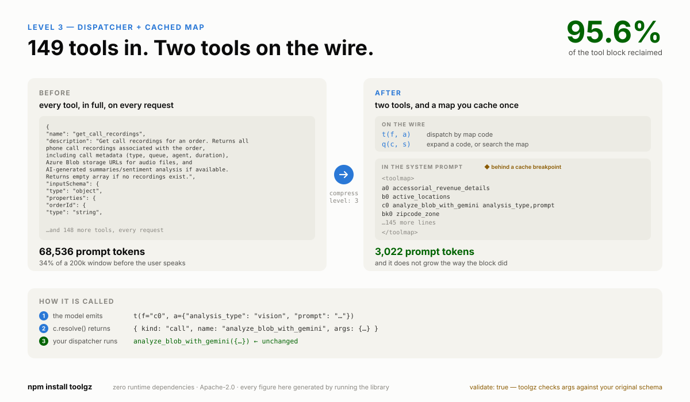
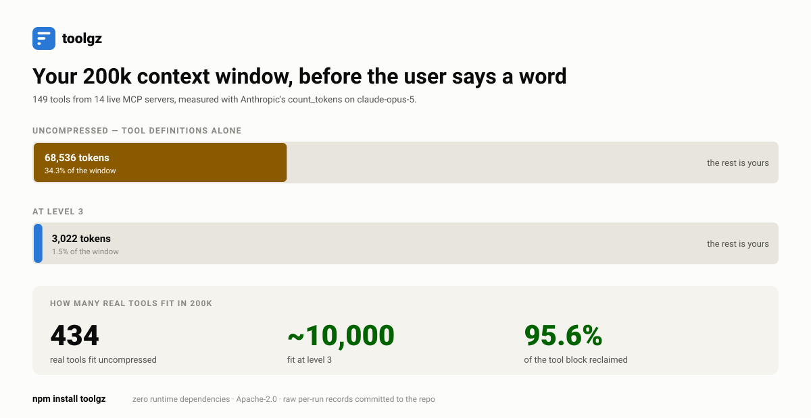
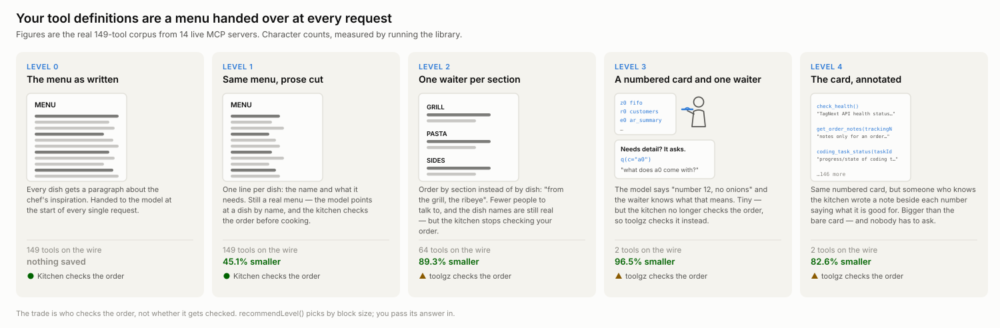
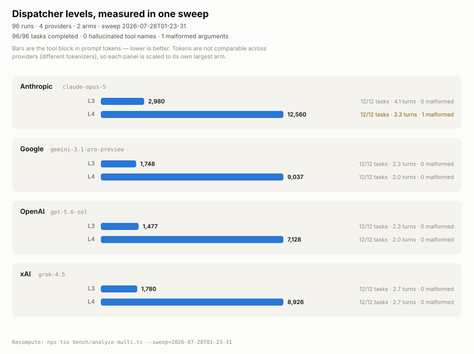

Your agent spends 30–70k tokens of its context window describing what it is allowed to do — before the user types a word. toolgz gets up to ~85% of that back, and hands your dispatcher exactly what it got before.

Connect a few MCP servers. Each ships 20–50 tools. Every tool is a JSON Schema with a sentence of prose per parameter, and that block renders at the front of every single request. A realistic tool definition is ~420 tokens, and roughly 400 of them are prose the model does not need in order to pick correctly.

count_tokens. Prompt caching makes those
tokens cheap; it does not give the room back.import { compress, recommendLevel, forAnthropic } from "toolgz";
const { level } = recommendLevel(myTools); // advice: 0, 1 or 3
const c = compress(myTools, { level }); // your existing MCP/SDK tool array
const { tools, system } = forAnthropic(c); // send these insteadThen translate the model's call back before you dispatch:
const r = c.resolve(block.name, block.input);
if (r.kind === "call") await myDispatch(r.name, r.args); // real name, real argsmyDispatch receives exactly what it received before. Nothing downstream changes.
Adapters ship for Anthropic Messages, OpenAI /v1/chat/completions and
/v1/responses, Google Gemini, and xAI.

recommendLevel() advises by block size, not tool
count — compress(tools) is level 1 whether you have 2 tools or 500.One native tool each, schemas flattened, real names kept. The provider still
enforces your schema. Measured: fewer tokens, zero malformed arguments, zero extra
turns, latency no worse. It earns its saving by stripping prose, so on already-terse
descriptions it adds ~15% and recommendLevel tells you not to bother.
One compound tool per namespace, with operation names as an enum — so
real op names stay visible on the raw request, which level 3 hides behind codes.
Dominated on measurement: 4,408 prompt tokens against level 3's 2,947, and 16 malformed
arguments against zero, over 60 runs each. Pick it only if something downstream must
read those names.
One dispatcher plus one lookup, and a compact map cached in your system prompt. Two
tools on the wire however many you start with, for about half an extra turn. Its
weakness is that the map is only as good as your tool names — check
stats.ambiguousMapLines. If your tools take objects or arrays, set
mapStyle: "signature": the default shows parameter names without
shapes, and every malformed argument in a 144-run shape test landed on that arm.
Level 3's dispatcher, but a model compiles your corpus into minified Python first, so
each line says what the tool is for. On the real corpus that takes ambiguous map
lines from 101/149 to zero — at 12,441 tokens against level 3's 2,987.
Deliberately bigger: it buys back what level 3 deletes. 180 live runs, every task
completed, zero hallucinated names. Needs npx toolgz compile.
Level 0 is a passthrough — your tools
unchanged — so you can A/B against an uncompressed baseline without touching anything else.
recommendLevel() returns 0, 1 or 3; it never returns 2 (dominated) or 4 (needs a
compiled artifact you may not have), but it tells you when your level-3 map would be all
lookalikes and names the fix.
Want enforcement? Use level 1. A compiled map works here too —
compress(tools, { level: 1, compiled }) swaps each tool's prose for the
compiled docstring at about the same size, with the real schema still on the wire. An
earlier version of this page claimed it also saved 16%; it did, by dropping the parameter
list, and an external team measured that costing 9–13 points of selection accuracy. The
saving was the parameter list. A dispatcher cannot have provider
enforcement at all: argument checking would need a discriminated union the API rejects,
and constraining the function name was measured and removed — it cost up to 70% of the
level-3 map and caused the only two task failures in a 192-run sweep.
The trade, stated plainly: at levels 2, 3 and 4 the model fills a generic
argument object, so the provider's sampler no longer enforces your schema. toolgz validates
against your original schema and returns a model-readable error instead — which is why
validate defaults to on. Leave it on.
420 runs on the current sweep, 3,283 across all rounds. Every raw per-run record is committed to the repository, so you can recompute any figure here rather than take our word for it.
| Provider | Model | Tool block | Prompt tokens | Latency | Tasks |
|---|---|---|---|---|---|
| Anthropic | claude-opus-5 | 9,242 → 1,284 | 30,817 → 4,628 −85% | 15.0s → 12.1s | 15/15 |
| xAI | grok-4.5 | 6,421 → 775 | 17,522 → 2,663 −85% | 6.1s → 4.6s | 15/15 |
gemini-3.1-pro-preview | 5,264 → 732 | 10,948 → 2,302 −79% | 5.6s → 5.5s | 15/15 | |
| OpenAI | gpt-5.6-sol | 2,752 → 573 | 7,694 → 2,196 −71% | 6.8s → 5.6s | 15/15 |
Level 3 at the shipped default map style. 60/60 tasks
completed, zero hallucinated tool names, zero malformed arguments — and faster than
uncompressed on every provider. The suite is built from deliberately confusable tool clusters
(search_issues vs list_issues, approve-vs-merge, three products with
identically shaped operations side by side) where the correct choice turns on the tool name
compression takes away.

| Tools | Uncompressed | Level 3 | Reclaimed |
|---|---|---|---|
| 149 (the real corpus) | 68,536 | 3,022 | 95.6% |
| 435 | 199,822 | 8,690 | 95.7% |
| 800 | 368,826 | 16,006 | 95.7% |
| 1,200 | 552,795 | 23,880 | 95.7% |
Measured with Anthropic's count_tokens and
confirmed against live API calls. Both the uncompressed block and the map grow linearly, so the
ratio holds from 149 tools to 1,200.
recommendLevel() will tell you so — it returns 0 when
level 1 would make your block bigger.validate and recovered, no
task lost, but that is the known edge.Every benchmark round, including the ideas that were measured and killed →
Provider setup, prompt caching, MCP wiring, troubleshooting and the complete API reference.
Five programs, all offline, every one executed by the test suite so it cannot rot.
The complete tools array and system prompt at every level, with real token counts and a live encode → decode round trip.
Every per-run record from every sweep, committed. Recompute any figure on this page.
Using an AI coding agent?
Point it at node_modules/toolgz/llms.txt — prescriptive integration instructions
shipped inside the package, including a Do not list of the mistakes we have actually
fielded.